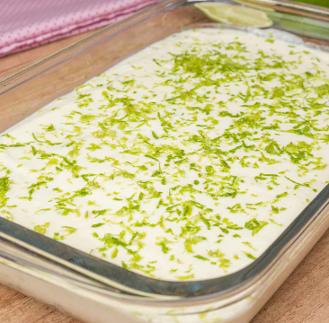

Receitas Simples
Doces
Mousse de limão
Nível: fácil

Ingredientes:
- 1 lata de leite condensado
- 1/2 xícara de suco de limão puro
- 1 caixinha de creme de leite
Modo de preparo:
- Em um liquidificador coloque todos os ingredientes e pronto!
Voltar para o início.